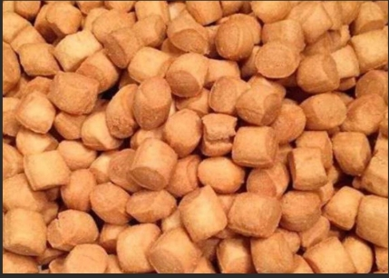

Chin - Chin is known as a Crunchy, Sweet West African snack, Perfect for any Occasion.
Freshly made Chin-chin snack
Mix flour, sugar, baking powder, nutmeg, and salt in a bowl.
Add butter and rub into the flour mixture until it looks like breadcrumbs.
Whisk egg, milk, and vanilla extract together (in a separate bowl), then add to the dry mixture to form a smooth, non-sticky dough.
Cover the dough and let it rest for 10-15 minutes.
Roll out the dough on a floured surface to about 1/4 inch thickness.
Cut the dough into small squares or strips using a knife or pizza cutter.
Heat oil in a deep pan over medium heat. Fry the dough pieces in batches, stirring occasionally, until golden brown and crispy.
Remove the fried Chin-chin with a slotted spoon(spoon with holes) and drain on paper towels. Let them cool completely before serving.
Ensure the oil is hot enough before frying to achieve a crispy texture. You can adjust the sugar and nutmeg to your taste preference.
Let the Chin-chin cool completely for extra crunchiness.
Store in an airtight container.